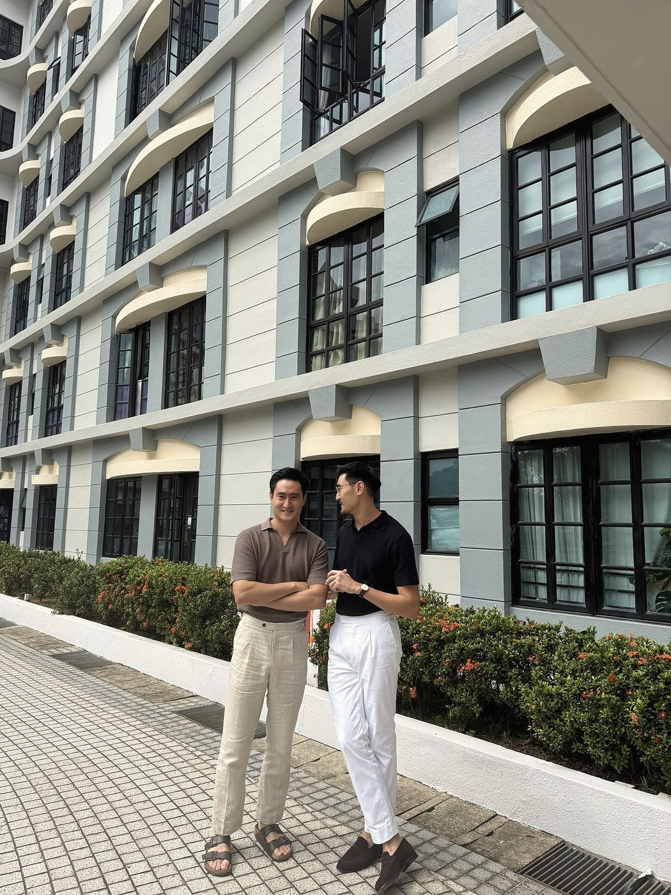
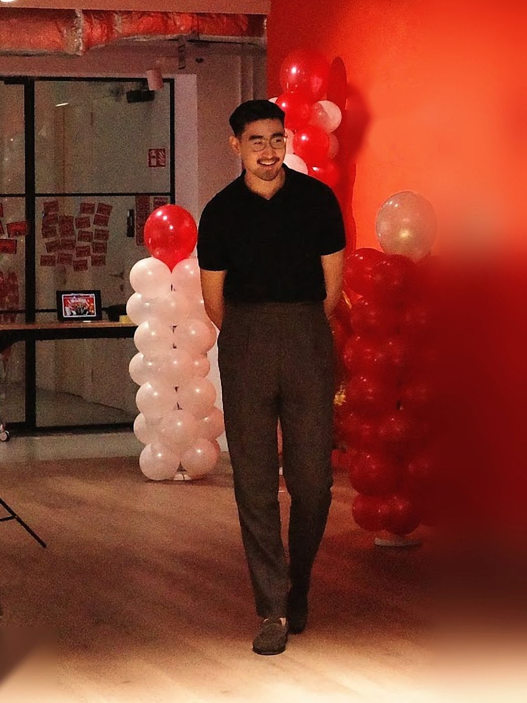
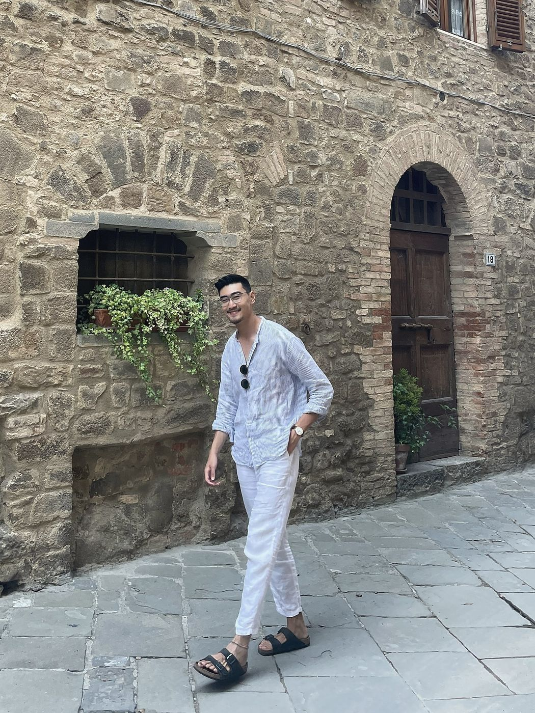
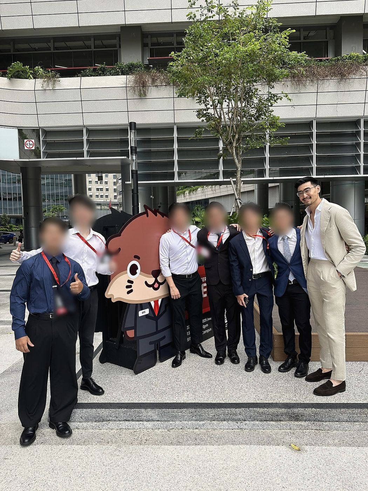
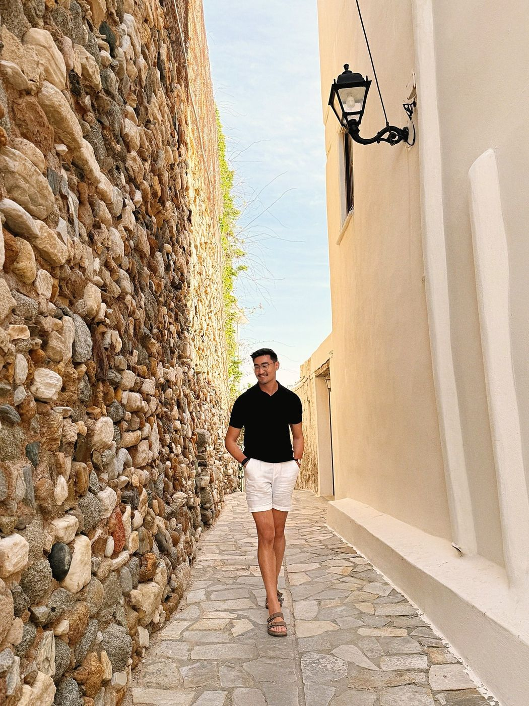

Menswear advisory, Singapore
Singapore is 31°C. Dress for it, not against it.
Masa is a personal style practice for men who live at 31°C. We read your frame, your week and the climate, then build a wardrobe in cloth that breathes, so you look considered from the first meeting to the last.
Singapore has no cold season. Most style advice is written for places that do.
Most style advice assumes a cold city, where wool jackets and heavy knits trap warm air. Borrow that at 84% humidity and the outfit fails before you reach the office lift. Here, the cloth, the cut and the colour do the work.
Source: Meteorological Service Singapore, long-term climate averages.
Our approach
Four levers decide whether an outfit works at 31°C.
Every recommendation we make pulls on one of these. None of them adds heat.
Fabric
Linen, open-weave cotton, fresco wool and fine-gauge knits. Cloth that breathes lets you wear structure without the heat.
A knit polo gives you a collar and texture in one light piece.
Proportion
Rise, drape and length carry an outfit when nothing sits on top. A higher rise lengthens the leg and keeps a tucked shirt in place.
Pleated trousers with side adjusters give a clean waist, with or without a jacket.
Colour
Tonal dressing plus one deliberate contrast creates the depth layering usually supplies. Light colours also reflect the sun.
Brown knit, cream trousers, dark suede. Three tones, one layer.
Your frame
Shoulder width, torso length and bone structure decide which cuts flatter you. We start there, not with the trend.
Collar spread and watch size scaled to your build.

Fitted to you
Every frame is different. A trend is a photo of someone else's body.
Two men can wear the same knit polo and get opposite results. Shoulder width, torso to leg ratio, bone structure and how you carry weight all change what works. Trend content cannot see any of that. We can.
The evidence
Every look here was worn in real heat.

Start with a free 30-minute fit call.
Send us a message on WhatsApp and tell us what you wear now. Founding rates start at S$100 for our first 30 clients.
Insights
Notes on dressing for the equator.

ArticleLinen creases. That is the point.
The fabric most men avoid is the one this city needs. How to wear it so it looks intentional.

ArticleMost men in Singapore wear their trousers too low
A low rise shortens the leg and untucks your shirt by lunch. How to find the right rise for your frame.

ArticleA knit polo does the job a blazer used to
Collar, texture and structure in one layer. What to look for in gauge, fibre and fit.